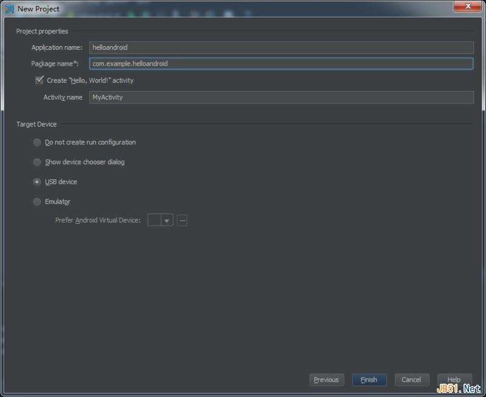
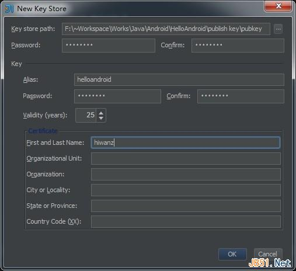

この記事では主にAndroid APP開発入門チュートリアルを紹介しています。SDKのダウンロード、開発環境の構築、コード作成、APPのパッケージングなどの手順を一つ一つ解説しており、非常に簡潔なAndroid APP開発入門チュートリアルです。必要な方は参考にしてください。
仕事でモバイルアプリのプロジェクトに携わったことがあり、フロントエンドとandroidまたはiosプログラマーが協力してプロジェクト全体の開発を完了しました。開発過程ではiosプログラムとの連携はほとんど問題ありませんでしたが、androidは様々な機種やromの問題が多く、これがきっかけでandroidとiosアプリ開発を学びたいと思うようになりました。そこで午前1時に眠れず、最初のandroidプログラム「HelloAndroid」を作成しました。公開して、同じくandroid開発を学びたい他の友達にも共有します。これほど初心者向けのAndroid開発入門記事は、少し開発経験があれば理解できるはずです。
一、事前準備
主に自分の開発環境を例に説明します。JDKとAndroid SDKをダウンロードしてインストールします。既製のIDEがない場合は、SDK完全パッケージを直接ダウンロードできます。これにはEclipseが含まれています。IDEがある場合は、下にスクロールして「USE AN EXISTING IDE」を選択し、SDKをインストールします。SDKのインストール時にJDKディレクトリが見つからない場合は、システム環境変数にJAVA_HOME変数を追加し、そのパスを自分のJDKディレクトリに設定します。私のIDEはIntelliJ IDEAです。すべてインストールしたら、IDEの設定を開始してSDKサポートを追加します。
まず、Android SDK Managerを開き、Android 4.0以上の未インストールのバージョンにチェックを入れてインストールします。個人の実際の状況に応じて、自分の携帯電話だけでテストする場合は、自分の機種のシステムと同じバージョンのSDKパッケージをインストールしてください。ダウンロードには少し時間がかかります。

次にIDEを開いて新しいプロジェクトを作成します。IDEAは非常にインテリジェントで、SDKをインストールしていれば、新規プロジェクトにAndroidのApplication Moduleが表示されます。選択すると、右側のProject SDKが空になっているので、Newボタンをクリックし、SDKディレクトリを見つけて確定します。ドロップダウンリストにはインストール済みの各バージョンのSDKが表示されるので、必要なバージョンを選択します。初回設定の場合は、IDEが先にJDKを設定するよう促すので、プロンプトに従ってJDKディレクトリを見つけてください。

プロジェクト名を記入したら、次へ進み「USB Device」を選択し、プロジェクトの構築を完了します。IDEが基本的なプロジェクトに必要なファイルとディレクトリを自動的に生成します。


二、コード作成
準備ができたら、いよいよhello androidを書き始めます。コードを書き始める前に、いくつかのファイルを理解しておきましょう：
res/layout/main.xml アプリのメインウィンドウのレイアウトファイルです。アプリの見た目はすべてここで定義されます。「Design」と「Text」の2つのモードがあります。
res/values/strings.xml i18nファイルと考えることができます。このファイルはプログラムが呼び出すさまざまな文字列を格納するために使用します。
src/com/example/helloandroid/MyActivity.java これがメインプログラムクラスです。これから実装する機能はすべてこのファイルに追加します。
まず、アプリにidが「hellotextView」のtextviewとidが「hellobutton」のbuttonを追加します。main.xmlのコードは以下の通りです：
<?xml version="1.0" encoding="utf-8"?>
<LinearLayout xmlns:android="http://schemas.android.com/apk/res/android"
android:orientation="vertical"
android:layout_width="fill_parent"
android:layout_height="fill_parent"
>
<TextView
android:layout_width="fill_parent"
android:layout_height="180dp"
android:text="@string/default_message"
android:id="@+id/hellotextView" android:textColor="#0080FF" android:gravity="center"/>
<Button
android:layout_width="wrap_content"
android:layout_height="wrap_content"
android:text="@string/button_send"
android:id="@+id/hellobutton" android:layout_gravity="center"/>
</LinearLayout>
コードとコントロールで使用する文字列の定義は以下の通りです：
<?xml version="1.0" encoding="utf-8"?>
<resources>
<string name="app_name">helloandroid by hiwanz</string>
<string name="button_send">Say something</string>
<string name="default_message">Click button below!</string>
<string name="interact_message">You just clicked on the Button!</string>
</resources>
メインプログラムで、buttonクリック後にtextviewの表示テキストを変更し、Toastのプロンプトメッセージを表示するように定義します。コードは以下の通りです：
package com.example.helloandroid;
import android.app.Activity;
import android.os.Bundle;
import android.view.View;
import android.widget.Button;
import android.widget.TextView;
import android.widget.Toast;
public class MyActivity extends Activity {
/**
* Called when the activity is first created.
*/
@Override
public void onCreate(Bundle savedInstanceState) {
super.onCreate(savedInstanceState);
setContentView(R.layout.main);
//得到按钮实例
Button hellobtn = (Button)findViewById(R.id.hellobutton);
//设置监听按钮点击事件
hellobtn.setOnClickListener(new View.OnClickListener() {
@Override
public void onClick(View v) {
//得到textview实例
TextView hellotv = (TextView)findViewById(R.id.hellotextView);
//弹出Toast提示按钮被点击了
Toast.makeText(MyActivity.this,"Clicked",Toast.LENGTH_SHORT).show();
//读取strings.xml定义的interact_message信息并写到textview上
hellotv.setText(R.string.interact_message);
}
});
}
}
コードを作成したら、コンピュータと携帯電話をUSBデータケーブルで接続し、携帯電話のシステム設定の「開発者向けオプション」で「USBデバッグ」をオンにします。IDEで「Run」を直接クリックすると、携帯電話で実行結果を確認できます。


アプリのパッケージング
アプリの開発が完了したら、パッケージ化してリリースします。IDEの「Build」メニューから「Generate Signed APK」を選択してアプリをパッケージングします。

表示されるウィザードダイアログで、署名用のKeyを指定する必要があります。最初はKeyがないので、「Create New」をクリックして署名用の新しいKeyを作成できます。署名に必要なフィールドを記入してKeyファイルを生成します。

生成したKeyを使用してアプリケーションパッケージに署名します。


コンパイルが完了すると、先ほど設定した「Designation APK path」の下に「helloandroid.apk」アプリケーションパッケージが生成されます。次にアプリをインストールする方法は説明するまでもないでしょう。こうして私たちの最初のAndroid Appが誕生しました。
出典：http://www.jb51.net/article/50395.htm